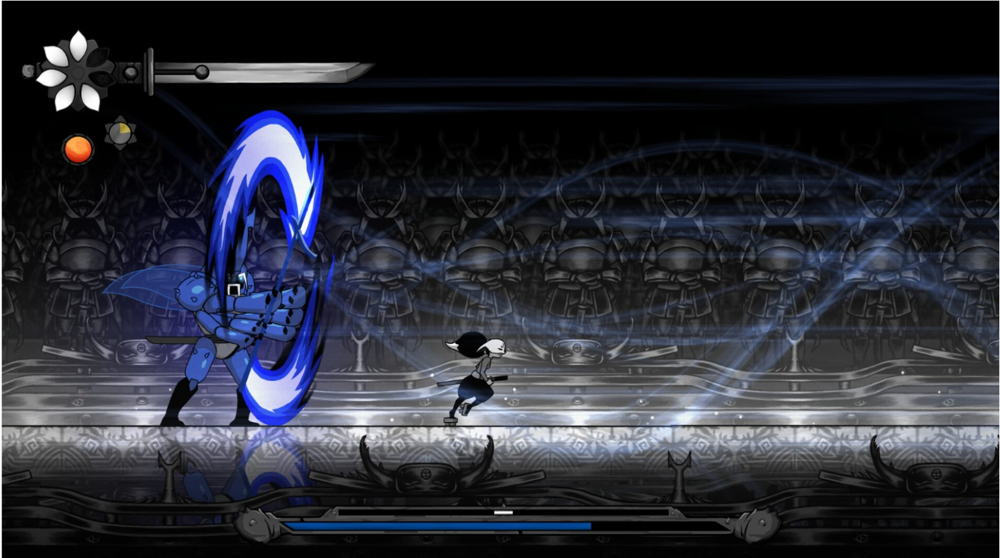
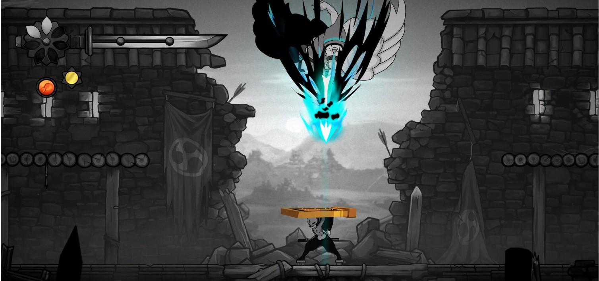
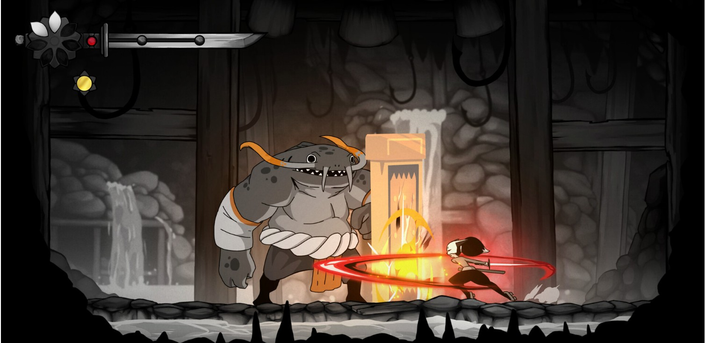
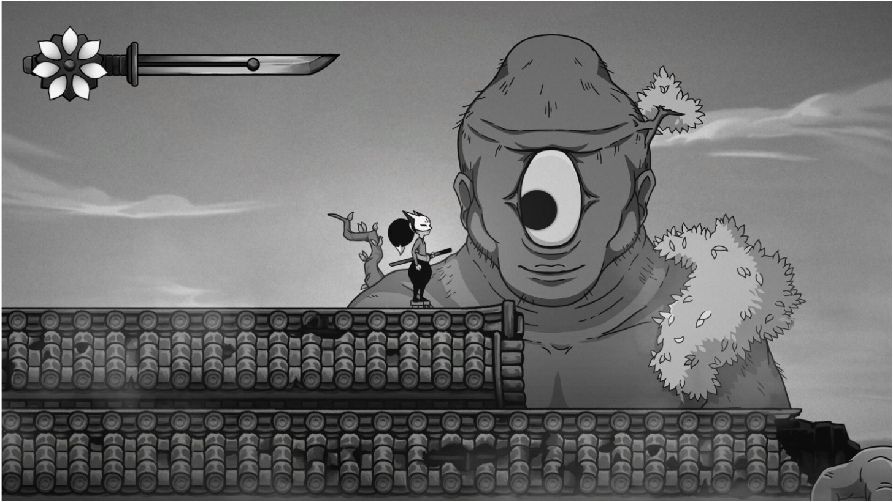

Gurei es lo último del estudio indie brasileño Lobo Sagaz Studio, un boss rush desarrollado con un arte dibujado a mano, en gran parte monocromático, ambientado en la mitología japonesa. Me llamó la atención nada más verlo por ese apartado artístico y por la fluidez de sus animaciones. Últimamente estoy muy a tope con este género de videojuegos, así que Gurei me entraba fresco justo ahora.
Solo bosses, sin relleno
El planteamiento es un boss rush puro y duro. No hay ningún tipo de enemigo común, solo enfrentamientos contra los jefes, los Kami, como se les llama aquí. Son diez en total, pero lo interesante es que puedes enfrentarte a ellos en el orden que prefieras. Por cada Kami que derrotas consigues su habilidad exclusiva para tu personaje, además de una vida extra. Si pierdes todas las vidas, tienes que empezar de nuevo, así que el objetivo real es eliminar a los diez sin quedarte por el camino sin vidas.

Dificultad dinámica y la estrategia de cada run
Gurei tiene un sistema de dificultad dinámico donde cada boss ve su dificultad incrementada conforme vas avanzando. Es decir, que los primeros Kami que te haces son un chiste, pero de cara al final de la run empiezan a ser algo serio. Me ha gustado que, cuando ya llevas unas cuantas partidas, empiezas a hacer estrategia real: puedes priorizar los bosses con los movesets más difíciles para dejarlos de cara al final, o priorizar los que te den las habilidades más útiles, como el parry, el dash o la capacidad de resucitar de forma temporal.

Exigente hasta el final secreto
Hay que reconocerle al estudio el empeño puesto en, por un lado, hacer un moveset cuya dificultad crezca de manera progresiva y, por otro, que se sienta desafiante en cualquiera de las fases tardías de la run, sea cual sea el Kami. A mí me ha costado un total de 4-5 horas llegar a créditos. Al que le guste muchísimo el juego, le espera un final secreto que exigirá poner al límite sus habilidades. Un reto a la altura.

En conclusión, es un juego breve con una estructura y progresión que me han sorprendido para bien. El arte es bueno y la jugabilidad es decente, pero tampoco considero que sea excelente en ningún aspecto concreto. La historia es totalmente irrelevante, olvidable y pasa fácilmente por debajo del radar, sin pena ni gloria. Si te gustan muchísimo los boss rush, te lo podría llegar a recomendar, porque esto es café para cafeteros. No obstante, hay opciones mucho más interesantes dentro del género que ofrecen una propuesta mejor.

Lo mejor
- El arte dibujado a mano y la fluidez de sus animaciones.
- Poder enfrentarte a los diez Kami en el orden que prefieras.
- La dificultad dinámica obliga a pensar una estrategia real en cada run.
Lo peor
- La historia es irrelevante y no deja poso alguno.
- No sobresale en ningún apartado concreto frente a otros boss rush del género.
- El final secreto exige un dominio muy alto del combate.
Desglose de puntuación
Veredicto
Un boss rush correcto que cumple con lo que promete: diez Kami, arte dibujado a mano y una dificultad que crece con cada run. Le falta algo que lo distinga de las propuestas más ambiciosas del género.